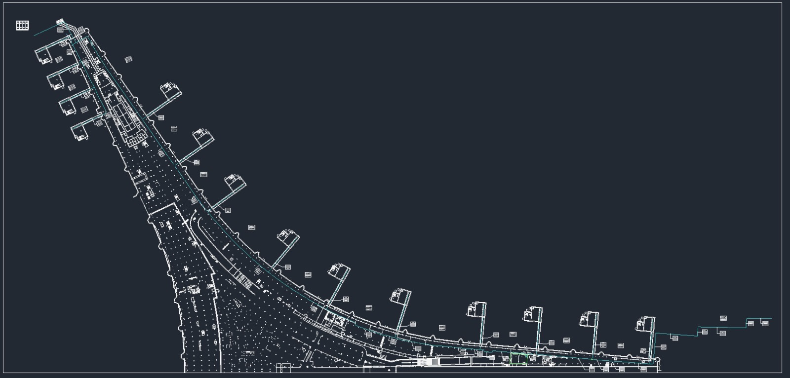
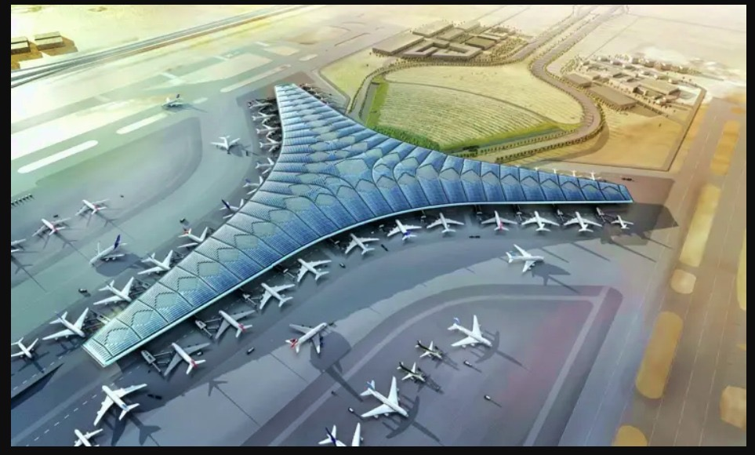
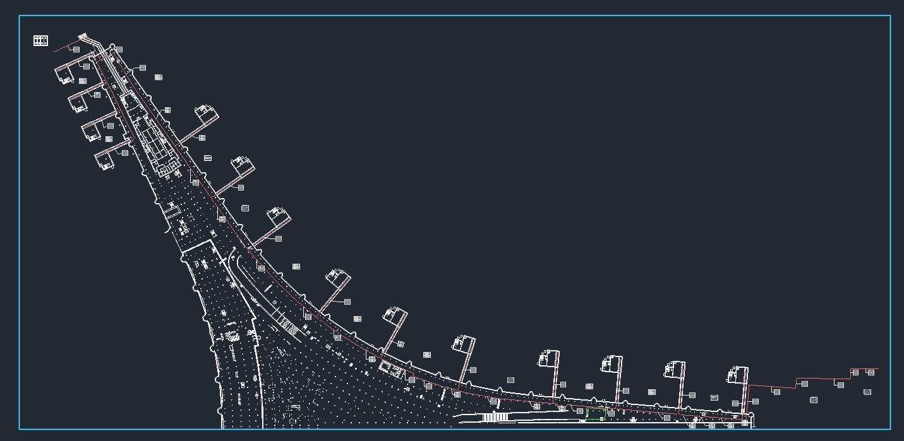
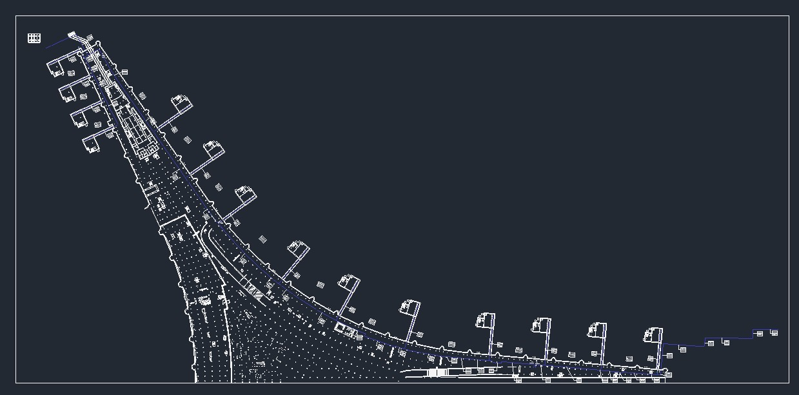

Kuwait International Airport
Mechanical BIM project work for the aircraft service house, including coordinated piping networks for potable water, return water, vacuum and blue water systems.
Mechanical BIM Scope
Project information is kept separate from the visual gallery so the engineering scope is easy to review before opening the drawings.
Modeling
LOD 400 mechanical piping modeling for the aircraft service house.
Systems
Potable water, return water, vacuum and blue water networks.
Coordination
Mechanical BIM coordination and routing within the airport project environment.
Deliverables
Coordinated model views and detailed system drawings supporting project delivery.
Drawings & Visuals
Tap any image to view it in full size. The gallery is kept separate from the project description for a cleaner portfolio presentation.

Mechanical Drawing 01
Airport Overview
Mechanical Drawing 02
Mechanical Drawing 03Coordinated Model Walkthrough
A walkthrough through the airport mechanical BIM model in Navisworks, showing the coordinated project environment and system routing.